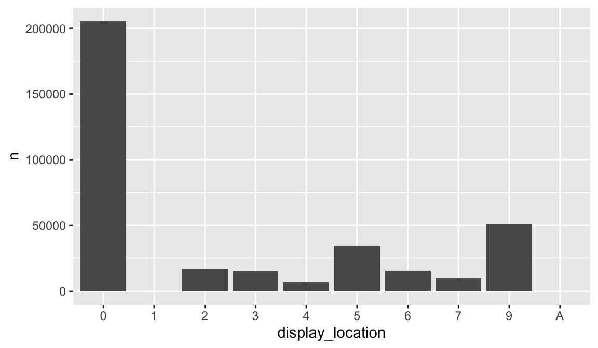

24 Lesson 5b: Handling factors
So far we’ve learned to work with several different data types such as strings and dates. However, one data type we haven’t discussed much are factors. Factors are used to represent categorical data and can be unordered or ordered.
One can think of a factor as an integer vector where each integer has a label. In fact, factors are built on top of integer vectors using two attributes: the class(), “factor”, which makes them behave differently from regular integer vectors, and the levels(), which defines the set of allowed values. Factors are important in statistical modeling and can be treated specially depending on the model used. Moreover, factors can influence how visualizations are displayed which is why we are introducing this lesson during this module.
Consequently, understanding how to manage factors is important and this lesson will provide you the basics of managing categorical data as factors.
24.1 Learning objectives
By the end of this lesson you will be able to:
- Describe what factors are and why we use them.
- Create factors from character strings.
- Modify factor levels and orders to help in your data wrangling.
24.2 Prerequisites
For this lesson you will need to load the tidyverse suite of packages. The primary emphasis will be on the forcats package which is automatically loaded when you load tidyverse. forcats provides tools for dealing with categorical variables (and it’s an anagram of factors!).
library(ggplot2) # for plotting capabilities
library(completejourney) # for data
library(dplyr) # for additional data wrangling24.3 Creating factors & inspecting factors
24.3.1 Some basics
Imagine that you have a variable that records month:
m1 <- c("Aug", "Oct", "Jan", "Mar")Using a string to record this variable has two problems:
There are only twelve possible months, and there’s nothing saving you from typos:
m2 <- c("Aug", "Oct", "Jam", "Mar")It doesn’t sort in a useful way:
sort(m1) ## [1] "Aug" "Jan" "Mar" "Oct"
You can fix both of these problems with a factor. To create a factor you must start by creating a list of the valid levels:
month_levels <- c(
"Jan", "Feb", "Mar", "Apr", "May", "Jun",
"Jul", "Aug", "Sep", "Oct", "Nov", "Dec"
)Now you can create a factor:
(my_months <- factor(m1, levels = month_levels))
## [1] Aug Oct Jan Mar
## Levels: Jan Feb Mar Apr May Jun Jul Aug Sep Oct Nov Dec
sort(my_months)
## [1] Jan Mar Aug Oct
## Levels: Jan Feb Mar Apr May Jun Jul Aug Sep Oct Nov DecAnd any values not in the set will be silently converted to NA:
# misspelled month is forced to NA
factor(m2, levels = month_levels)
## [1] Aug Oct <NA> Mar
## Levels: Jan Feb Mar Apr May Jun Jul Aug Sep Oct Nov DecWe can use class() as we have in the past to verify the vector is a factor and use levels to extract the levels of the factor:
class(my_months)
## [1] "factor"
levels(my_months)
## [1] "Jan" "Feb" "Mar" "Apr" "May" "Jun" "Jul" "Aug" "Sep" "Oct" "Nov" "Dec"24.3.2 Factors in data frames
When factors are stored in a tibble, you will notice them by the <fct> heading; however, you can’t see their levels. One way to see them is with count():
promotions_sample %>%
count(display_location)
## # A tibble: 10 × 2
## display_location n
## <fct> <int>
## 1 0 205534
## 2 1 4266
## 3 2 16396
## 4 3 14902
## 5 4 6615
## 6 5 34216
## 7 6 15207
## 8 7 9689
## 9 9 51368
## 10 A 2342When we plot a factor variable ggplot will plot the values in the order of the factor:
ggplot(promotions_sample, aes(display_location)) +
geom_bar()
By default, ggplot2 will drop levels that don’t have any values…
promotions_sample %>%
count(display_location) %>%
filter(n > 5000) %>%
ggplot(aes(display_location, n)) +
geom_col()… but you can force them to display with scale_x_discrete(drop = FALSE):
promotions_sample %>%
count(display_location) %>%
filter(n > 5000) %>%
ggplot(aes(display_location, n)) +
geom_col() +
scale_x_discrete(drop = FALSE)24.3.3 Ordinal factors
Sometimes factors will be ordinal. You will notice this by the <ord> description in a tibble:
demographics
## # A tibble: 801 × 8
## household_id age income home_ownership marital_status household_size household_comp
## <chr> <ord> <ord> <ord> <ord> <ord> <ord>
## 1 1 65+ 35-49K Homeowner Married 2 2 Adults No Kids
## 2 1001 45-54 50-74K Homeowner Unmarried 1 1 Adult No Kids
## 3 1003 35-44 25-34K <NA> Unmarried 1 1 Adult No Kids
## 4 1004 25-34 15-24K <NA> Unmarried 1 1 Adult No Kids
## 5 101 45-54 Under 15K Homeowner Married 4 2 Adults Kids
## 6 1012 35-44 35-49K <NA> Married 5+ 2 Adults Kids
## 7 1014 45-54 15-24K <NA> Married 4 2 Adults Kids
## 8 1015 45-54 50-74K Homeowner Unmarried 1 1 Adult No Kids
## 9 1018 45-54 35-49K Homeowner Married 5+ 2 Adults Kids
## 10 1020 45-54 25-34K Homeowner Married 2 2 Adults No Kids
## # … with 791 more rows, and 1 more variable: kids_count <ord>And we can verify with class():
class(demographics$age)
## [1] "ordered" "factor"Ordinal factors are pretty much the same as regular factors, its just an explicit way of saying that this factor has levels that should retain an order. We can probably agree that a factor for colors has no order. There is no inherent order of our colors.
Consequently, the levels of this factor will simply be based on the alphabetical order of discrete values in the colors vector:
colors <- c('blue', 'green', 'blue', 'yellow', 'blue', 'green')
factor(colors)
## [1] blue green blue yellow blue green
## Levels: blue green yellowOr we could specify the levels explicitly:
options <- c('blue', 'red', 'yellow', 'green')
factor(colors, levels = options)
## [1] blue green blue yellow blue green
## Levels: blue red yellow greenHowever, some factors do have inherent ordering. For example, say we have a vector of the sizes of a container:
sizes <- c('small', 'large', 'large', 'medium', 'small', 'large')
factor(sizes)
## [1] small large large medium small large
## Levels: large medium smallIn this case, we may want to ensure that our levels follow an explicit ordinal hierarchy:
options <- c('small', 'medium', 'large')
factor(sizes, levels = options, ordered = TRUE)
## [1] small large large medium small large
## Levels: small < medium < largeThis ordinal nature typically does not have a large impact in exploratory data analysis but as we progress into statistical modeling and machine learning it does play a bigger role.
24.3.4 Knowledge check
-
What kind of factor is the
home_ownershipvariable in thedemographicsdata? - What are the levels of this factor?
- Are all levels represented in this data? In other words, is there at least one or more observations for each level?
- Create a bar plot for this variable where all levels are illustrated in the plot.
24.4 Modifying factor order
It’s often useful to change the order of the factor levels. This is most often beneficial for visualizations but can also become useful when dealing with machine learning algorithm such as one of the generalized linear regression family models where the first level of a factor becomes the default baseline.
As an example, say we wish to create a bar chart of homeownership frequency. By default, the bars will be plotted in the order of the levels; however, if we wish to change the order of the levels with explicit values than we can use fct_relevel inside of the mutate function to change the levels.
p1 <- ggplot(demographics, aes(home_ownership)) +
geom_bar() +
ggtitle('Original order') +
coord_flip()
new_levels <- c("Unknown", "Probable Renter", "Probable Homeowner", "Renter", "Homeowner")
p2 <- demographics %>%
mutate(home_ownership = fct_relevel(home_ownership, levels = new_levels)) %>%
ggplot(aes(home_ownership)) +
geom_bar() +
ggtitle('New order') +
coord_flip()
gridExtra::grid.arrange(p1, p2, nrow = 1)
A similar function is fct_reorder. Consider the following chart which plots the top 20 levels of prod_desc with the largest average net_spend_amt.
spend_by_dept <- transactions_sample %>%
inner_join(products, by = "product_id") %>%
group_by(department) %>%
summarize(total_spend = sum(sales_value))
ggplot(spend_by_dept, aes(total_spend, department)) +
geom_point()
In the above chart, there is no natural order of the levels; rather, we wish to communicate those categories with the largest values in a rank-order fashion. To highlight the pattern in this chart we can improve it by reordering the levels of department based on the values of total_spend using fct_reorder().
ggplot(spend_by_dept, aes(total_spend, fct_reorder(department, total_spend))) +
geom_point()
When reording factor levels for plots its best to do it within the
ggplot call. When you want to reorder factor levels more
permanently it is best to do it within mutate.
24.5 Modifying factor levels
Sometimes you need to do more than just reorder factors. This may include recoding values, combining different levels, and dropping unused levels.
Consider our total sales by department. Let’s coerce our department’s to a factor.
spend_by_dept <- mutate(spend_by_dept, department = factor(department))
spend_by_dept
## # A tibble: 26 × 2
## department total_spend
## <fct> <dbl>
## 1 AUTOMOTIVE 12.6
## 2 CHEF SHOPPE 73.9
## 3 CNTRL/STORE SUP 1
## 4 COSMETICS 1087.
## 5 COUPON 30.2
## 6 DELI 7838.
## 7 DRUG GM 29563.
## 8 FLORAL 1231.
## 9 FROZEN GROCERY 14.8
## 10 FUEL 16529.
## # … with 16 more rowsIf we wanted to rename categories we can use fct_recode. This allows us to rename one or more factor levels at a time.
spend_by_dept %>%
mutate(department = fct_recode(
department,
"STORE SUPPLIES" = "CNTRL/STORE SUP",
"OVER COUNTER PHARMA" = "DRUG GM"
)) %>%
ggplot(aes(total_spend, fct_reorder(department, total_spend))) +
geom_point()
fct_recode will leave levels that aren’t explicitly
mentioned as is, and will warn you if you accidentally refer to a level
that doesn’t exist.
To combine groups, you can assign multiple old levels to the same new level:
spend_by_dept %>%
mutate(department = fct_recode(
department,
"MEAT & SEAFOOD" = "MEAT",
"MEAT & SEAFOOD" = "SEAFOOD"
))
## # A tibble: 26 × 2
## department total_spend
## <fct> <dbl>
## 1 AUTOMOTIVE 12.6
## 2 CHEF SHOPPE 73.9
## 3 CNTRL/STORE SUP 1
## 4 COSMETICS 1087.
## 5 COUPON 30.2
## 6 DELI 7838.
## 7 DRUG GM 29563.
## 8 FLORAL 1231.
## 9 FROZEN GROCERY 14.8
## 10 FUEL 16529.
## # … with 16 more rowsIf you want to collapse a lot of levels, fct_collapse is a useful variant of fct_recode. For each new variable, you can provide a vector of old levels.
spend_by_dept %>%
mutate(department = fct_collapse(
department,
"MEAT & SEAFOOD" = c("MEAT", "MEAT-PCKGD", "SEAFOOD", "SEAFOOD-PCKGD")
))
## # A tibble: 26 × 2
## department total_spend
## <fct> <dbl>
## 1 AUTOMOTIVE 12.6
## 2 CHEF SHOPPE 73.9
## 3 CNTRL/STORE SUP 1
## 4 COSMETICS 1087.
## 5 COUPON 30.2
## 6 DELI 7838.
## 7 DRUG GM 29563.
## 8 FLORAL 1231.
## 9 FROZEN GROCERY 14.8
## 10 FUEL 16529.
## # … with 16 more rowsSometimes you just want to lump together all the small groups to make a plot or table simpler. That’s the job of fct_lump(), which progressively lumps together the smallest groups until it reaches the specified number of desired groups (n).
transactions_sample %>%
inner_join(products, by = "product_id") %>%
mutate(department = fct_lump(department, n = 10)) %>%
group_by(department) %>%
summarize(total_spend = sum(sales_value)) %>%
ggplot(aes(total_spend, fct_reorder(department, total_spend))) +
geom_point()24.6 Exercises
-
Filter the
productsdata for “BREAD” category. Now lump all breadproduct_typesinto 10 categories. Which category has the most observations? How many observations fall in the “Other” category? - Now plot the result from #1 with a bar plot and reorder the bars so they are ordered by number of observations.
24.7 Additional Resources
If you want to learn more about factors, I recommend reading Amelia
McNamara and Nicholas Horton’s paper, Wrangling categorical data
in R. This paper lays out some of the history discussed in stringsAsFactors:
An unauthorized biography and stringsAsFactors
=